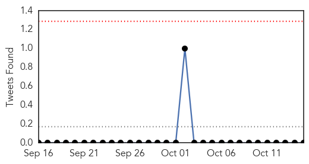

Chikungunya
30-Day Web Trend
0 alerts, 2 warnings

30-Day Twitter Trend
1 alerts, 0 warnings

Article Locations

Article Confidences

Top Articles:
- 0.994
- Mosquito-Borne Chikungunya Virus Likely to Reach Mexico: Health Ministry
- 0.994
- Mosquito-borne Chikungunya virus likely to reach Mexico- health ministry
- 0.993
- Mosquito-borne Chikungunya virus likely to reach Mexico- health ministry
- 0.866
- Jamaican PM calls for combating Chikungunya virus
- 0.635
- KSAC to Deploy Volunteers in Education Drive Against CHIK-V
- 0.592
- Jamaica reports chikungunya related death in college student, Health Minister Ferguson wants to be infected
Top Tweets:
-
No tweets found for Oct 15, 2014
Cholera
30-Day Web Trend
0 alerts, 0 warnings

30-Day Twitter Trend
0 alerts, 0 warnings

Article Locations

Article Confidences

Top Articles:
- 0.897
- Disease detectives
- 0.895
- Health Misinformation Is Deadly As A Prescription Of The Quack Doctor
- 0.823
- Water and sanitation infections rife in Tano North
- 0.763
- Focus efforts on tackling poor sanitation
- 0.596
- FG Urges Nigerians To Imbibe Hand Washing Culture
- 0.562
- South Sudan: the Forgotten Crisis in Jonglei State
Top Tweets:
-
No tweets found for Oct 15, 2014